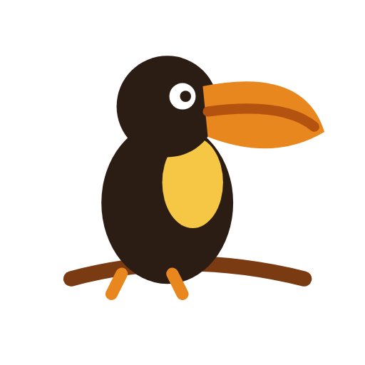

Cabaña Momotus
Privacidad, vistas panorámicas a las montañas y ambiente romántico entre aves y árboles nativos.

Tucán Ecolodge · ManaureCabañas y piscina en Manaure Balcón del Cesar, a 40 minutos de Valledupar. Tuki, el empleado digital del ecolodge, responde a toda hora, recomienda la cabaña ideal y lleva a cada huésped al enlace de reservas. Escríbele como lo haría alguien que planea su escapada.
Esta es una versión de demostración. Las respuestas se ajustan a la voz, los precios y las políticas de Tucán Ecolodge antes de publicarla. Tuki no inventa datos: si algo no lo sabe, pasa la conversación a una persona del equipo.
Desde escapadas en pareja hasta el uso exclusivo del ecolodge para grupos grandes.
Privacidad, vistas panorámicas a las montañas y ambiente romántico entre aves y árboles nativos.
Diseño elevado y acogedor para descansar con la brisa, los sonidos del bosque y un cielo estrellado.
Habitación cómoda con acceso a espacios comunes en contacto con la naturaleza.
Espacio amplio con áreas sociales y hamacas, rodeado de árboles y con vista a las montañas de Manaure.
Todo el lugar para tu grupo.
Un plan para desconectarte del ruido.
Manaure Balcón del Cesar, Cesar, a unos 40 minutos de Valledupar.
Elige tus fechas en el motor de reservas para ver disponibilidad y valores, y paga en línea.
Reservar ahora